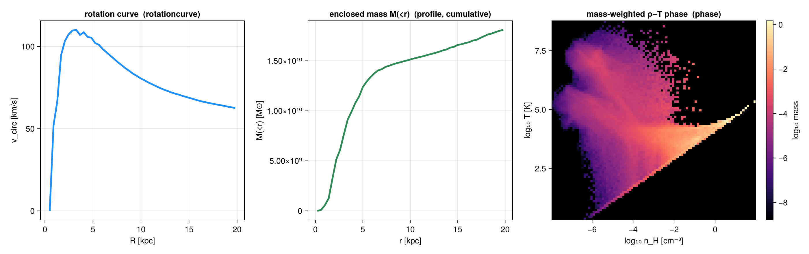

Profiles & Phase Diagrams
For a runnable walk-through (radial/vertical profiles, per-bin statistics, mass vs volume weighting, stars/gravity, profiles from 2-D maps, phase diagrams), see the Profiles & phase diagrams tutorial.
profile and phase are general weighted reductions over any getvar fields — they are not tied to projection or to a line of sight. A profile bins the data by one field; a phase diagram is a 2D weighted histogram of two fields. They work on
- 3D data — hydro, gravity, particles and clumps, using each type's available fields. (Gravity carries no
:mass, so weight by:volume/:none; clumps expose only their stored columns —:mass,:peak_x/y/z,:rho_av, … — not derived coordinates like:r_cylinder.) - projected 2D maps — a
projectionresult, viaprofile(m::DataMapsType, …)/phase(m::DataMapsType, …)(the returns carrysource=:map); see the tutorial.
Over the full data range (the default xrange) the binned weights sum to the grand total — e.g. a radial mass profile sums to the total mass. Restricting xrange/edges instead sums only the weight inside that range.

What you can compute
A profile is configurable along a few independent axes — mix and match freely.
Data source — 3-D data (profile(obj, …)) or a projected 2-D map (profile(m::DataMapsType, …)).
Per-bin reduction — with a yvar, every bin returns all of these at once:
| reduction | field(s) | notes |
|---|---|---|
| count / summed weight | count, sum, sumw2 | always returned; sum = Σweight (the mass/volume/… profile) |
| weighted mean | mean | |
| standard deviation | std | weight-weighted |
| standard error of the mean | sem, neff | sem = std/√neff (Kish effective sample size) |
| median & percentiles | median, quantiles, qlevels | weighted; set the levels via quantiles=[…] |
| extrema | min, max | |
| shape moments | skewness, kurtosis | weighted; kurtosis is excess (0 for a Gaussian) |
| custom | custom | statistic = f(yview, wview) (or f(yview)) |
Weighting — weight = :mass · :volume (grid only) · :none (equal cells) · any field. (Should be non-negative.) Binning — nbins + xrange + scale=:linear/:log/:equal (quantile-spaced adaptive bins, ~equal count per bin — robust for sparse outer radii / noisy data), or explicit edges=[…]. Reference point — center in center_unit (e.g. center=[24,24,24], center_unit=:kpc); the binning-axis unit is xunit, not center_unit (the axis can be any quantity). range_unit is a back-compat alias of center_unit.
One-line transforms (opt-in):
| want | kwarg | adds |
|---|---|---|
| physical density ρ(r) / Σ(R) | geometry=:spherical / :cylindrical | shell_volume, density |
| cumulative / enclosed M(<r) | cumulative=:forward / :reverse | cumsum, cumcount |
| normalized histogram (fractions / PDF) | normalize=:sum / :pdf | fraction, pdf |
| bootstrap uncertainties | bootstrap=N (ci=:percentile/:basic/:bca) | mean_ci, median_ci (nbins×2), median_se |
| several fields in one pass | yvar = [:a, :b] | fields[:a], fields[:b], yvars |
Normalizations — fractions, PDFs & density PDFs. With no yvar, the binned sum is a histogram of weight; normalize=:sum → fraction = sum/Σsum (bins add to 1); normalize=:pdf → pdf = fraction/Δedge (a true probability density, ∫ = 1, bin-width independent). The classic case is the density PDF — bin by :rho and normalize; weight=:mass vs :volume give the mass- vs volume-weighted ρ-PDF. The same normalize=:pdf makes a 2-D PDF in phase and a 3-D PDF in profile3d. (Worked, plotted example: tutorial §3.)
Bin widths by count, physical size, or population. Set bins by count (nbins+xrange), physical width (binsize), or explicit edges:
| you want | pass | note |
|---|---|---|
n bins over a range | nbins=40, xrange=(0,20) | default |
a fixed width Δ (in xunit) | binsize=0.5 | e.g. 0.5-kpc radial bins; overrides nbins |
| a width with its own unit | binsize=(500,:pc) | converted to xunit; final bin may be short (keeps the top edge) |
| a fixed dex step (log) | scale=:log, binsize=0.25 | log10-spaced; binsize is a dimensionless dex step |
| ~equal points per bin | scale=:equal | quantile-spaced adaptive bins (no binsize) |
| exact edges | edges=[…] | in xunit; wins over everything |
(phase/profile3d take per-axis xbinsize/ybinsize/zbinsize.)
Result fields — quick reference
What a profile returns (a NamedTuple; only the relevant fields are present):
| field(s) | shape | when |
|---|---|---|
x, edges, count, sum, sumw2 | nbins (edges: nbins+1) | always (sum = Σweight) |
mean, std, var, sem, neff, min, max, median, skewness, kurtosis | nbins | with a yvar |
quantiles, qlevels | nbins×nq, nq | with a yvar |
shell_volume, density | nbins | geometry=:spherical/:cylindrical |
cumsum, cumcount | nbins | cumulative=:forward/:reverse |
fraction (+ pdf) | nbins | normalize=:sum (:pdf) |
mean_ci, median_ci, median_se, ci_level, ci_method, nboot | nbins×2 / nbins | bootstrap=N |
custom | nbins | statistic=f |
fields[:name], yvars | per field | vector yvar (each field nests the per-bin stats above) |
weight, xvar, yvar, xunit, unit, source | — | provenance (weight=:vector for a raw-vector weight) |
Choosing the tool
| tool | bins | output | per-bin value | typical use |
|---|---|---|---|---|
profile(obj, x[, y]) | 1 | nbins | Σweight, or stats of y | radial ρ(r), rotation curve, ⟨T⟩(r), PDFs |
phase(obj, x, y[, c]) | 2 | nbins² (H) | joint Σweight; cstat of c | ρ–T diagram, joint PDF |
profile3d(obj, x, y, z[, c]) | 3 | nbins³ (H) | joint Σweight; cstat of c | ρ–T–Z cube; marginal ≡ phase |
rotationcurve(obj) | 1 (radius) | nbins | v_circ=√(GM(<r)/r) ≥ 0 | dynamical (mass-based) rotation curve |
velocitydispersion(obj) | 1 (radius) | nbins | σR/σφ/σ_z + total σ | kinematic dispersion profile |
profiletimeseries(loadfn, outs, …) | 1 × snapshots | nbins×nsnap | a profile per snapshot | radius-vs-time evolution |
profile(gas, :rho, :T) is the conditional ⟨T⟩(ρ) — one curve, the mean of T given ρ. phase(gas, :rho, :T) is the joint distribution H[ρ,T]. They agree at the margin: sum(phase.H, dims=2) equals profile(gas, :rho).sum on the same x-edges.
Velocity dispersion
The per-bin std of a velocity component is already its rest-frame kinematic dispersion (weighted variance about the per-bin mean — net rotation/streaming does not inflate it), so profile(gas, :r_cylinder, :vz).std is σz(R), `…, :vϕcylinder).stdis σ_φ(R), etc. [velocitydispersion`](@ref) is a convenience wrapper that returns σR / σφ / σz (cylindrical by default) and the total σ = √(σR²+σφ²+σz²) in one call. (Worked example: tutorial §7.)
Turbulent ⊕ thermal = total line width
The σ above is the turbulent (bulk) motion only. The width a spectrograph actually measures also includes the gas thermal motion. Pass thermal=true (with mu, the tracer mean molecular weight in H-atom masses — 2.33 molecular, 1.0 atomic, 0.6 ionized) to also get, per bin, the 1-D turbulent sigma_turb_1d = √(Σσ_i²/n), the thermal speed sigma_thermal = √(k_B⟨T⟩/(μ m_H)), the total sigma_total = √(sigma_turb_1d² + sigma_thermal²), and the turbulent Mach number mach = sigma_turb_1d/⟨c_s⟩:
vt = velocitydispersion(gas; thermal=true, mu=2.33, nbins=20, xrange=(0,18), center=[:bc], center_unit=:kpc)
vt.sigma_total # √(turbulent² + thermal²) [km/s]
vt.mach # σ_turb,1D / c_sLocal (patch-de-streamed) dispersion — localdispersion
velocitydispersion removes the mean per radial bin, so a velocity gradient across a wide annulus (shear, spiral streaming) leaks into "turbulence". localdispersion instead tiles the (x, y) plane into square patchsize patches and removes the per-patch mean velocity — the TIGRESS/SILCC way to isolate turbulence below a chosen length scale. Restrict the input first (e.g. shellregion to an annulus) — it returns aggregate scalars over the supplied region, with the turbulent/thermal/total σ, Mach, anisotropy, and the patch-to-patch percentile spread (usable as error bars):
solar = shellregion(gas, :cylinder, radius=[7,9], height=2, center=[:bc], range_unit=:kpc)
ld = localdispersion(solar; patchsize=[500,:pc], thermal=true, mu=2.33)
ld.sigma_total, ld.mach, ld.anisotropy, ld.sigma_total_q # scalars + (16,50,84)% patch spreadA kinematic rotation curve — the binned mean azimuthal velocity, profile(gas, :r_cylinder, :vϕ_cylinder) — carries the disk's rotation sense, so it can be negative (this galaxy's ⟨vϕ⟩ ≈ −230…−100 km/s). The dynamical rotationcurve returns the speed √(G·M/r) ≥ 0 (a spherical idealization — for the disk-flattening-exact curve use the gravity field's `:arcylinder, tutorial §6). Plotabs.(mean)` if you want a positive kinematic curve.
Profiles from 2-D maps
profile(m::DataMapsType, var; xvar=:r, …) bins the pixels of a projection result — a surface-brightness Σ(R), a column-weighted vlos(R) (weight=:sd), a σlos(R), or any map vs any map. It works for axis-aligned and off-axis maps: xvar=:r measures radius from the object centre (the map's cextent/pivot), so the profile is correctly centred for asymmetric FOVs and off-axis views; pass center=[cx,cy] (camera-plane, in center_unit) to offset it. (Worked examples, including off-axis: tutorial §9.)
These are box-axis / camera-independent reductions; for line-of-sight distributions (per-pixel spectra, velocity cubes) see the Off-axis Projection guide.
API
Mera.profile — Function
profile(dataobject, xvar [, yvar]; weight=:mass, nbins=50, xrange=nothing, scale=:linear,
edges=nothing, geometry=:none, cumulative=:none, normalize=:none, statistic=nothing,
xunit=:standard, unit=:standard, center=[:bc], center_unit=:standard,
quantiles=[0.16, 0.5, 0.84], mask=[false],
bootstrap=0, ci=:percentile, confidence_level=0.95, bootstrap_seed=20240601) -> NamedTuple1D profile from 3D data. Bin by xvar and reduce yvar (or the weight itself) per bin. Any getvar fields, for hydro / gravity / RT / particle data; the classic use is a radial profile with xvar a length (:r_cylinder, :r_sphere, :z, …) about a physical center. (Clumps expose only their own catalogue columns — they have no :mass/:rho/:r_sphere getvar field — so radial/mass profiles are not available for clump data.)
weight—:mass,:volume,:none(equal weights), or any field; should be non-negative (negative summed weights make the weighted mean/std/quantiles ill-defined →NaN). Mass/volume weighting works for any data type that has that field (:volumeis grid-only; particles use:mass).center/center_unit— reference point and its unit (e.g.center=[24,24,24], center_unit=:kpc).range_unitis accepted as a back-compat alias ofcenter_unit.xrange=(lo,hi)(end point) inxunit(the binning axis can be any quantity, so its unit isxunit, notcenter_unit/range_unit— unlike the spatialxrangeofprojection).xunit/unitset the x-axis /yvarfield units.scale—:linear(default),:log(log-spaced bins), or:equal(quantile-spaced adaptive bins so every bin holds ~the same number of points — robust for sparse outer radii / noisy data).bootstrap=N(>0) — also return bootstrap confidence intervals for the per-bin mean and median by resampling each binNtimes (default off).ciselects the interval::percentile(default),:basic, or:bca(bias-corrected & accelerated).confidence_level(default 0.95) and a fixedbootstrap_seed(deterministic). Addsmean_ci/median_ci(nbins×2: lower, upper) +median_se. Cost isO(bootstrap·N_bin)per bin (:bcaadds anO(N_bin²)jackknife) — meant for modest counts.quantiles— percentile levels for the per-bin weighted quantiles (default 16/50/84%).edges— an explicit vector of bin edges (overridesnbins/xrange/scale); given inxunit.geometry—:spherical(shell volume4/3·π·Δr³) or:cylindrical(annulus areaπ·Δr²) addsshell_volumeand adensity = sum / shell_volume(e.g. a radial ρ(r) or surface density), inweight-unit perxunit³ (xunit²). Pair withxvar=:r_sphere/:r_cylinder.cumulative—:forward(low→high) or:reverseaddscumsum/cumcount(e.g. enclosed mass M(<r)).normalize—:sumaddsfraction = sum/Σsum(bins sum to 1);:pdfalso addspdf = fraction/Δedge(integral = 1).statistic— a function applied per bin (called asf(yview, wview)if it accepts weights, elsef(yview)) returning a scalar; result incustom. Needsyvar.
yvar may be a vector of fields ([:T, :rho]): the data is binned once and each field is reduced in the same pass — the per-field statistics are returned under fields (e.g. p.fields[:T].mean) with the order in yvars.
Returns x (centres), edges, count, sum (Σ weight), sumw2 (Σ weight²); with a single yvar also weighted mean, std, sem (standard error on the mean via Kish neff), min, max, median, a quantiles matrix (nbins × length(qlevels)), and the weighted shape moments skewness and kurtosis (excess kurtosis — 0 for a Gaussian). (bootstrap adds the CI fields.)
profile(m::DataMapsType, var; xvar=:r, weight=:none, nbins=50, xrange=nothing, scale=:linear,
edges=nothing, geometry=:none, cumulative=:none, statistic=nothing,
xunit=:standard, center=nothing, center_unit=:standard, quantiles=[0.16,0.5,0.84])
-> NamedTuple1D profile from a projected 2D map (a projection result). Bin the pixels of m.maps[var] by xvar and reduce per bin with the same statistics as the data method. xvar is
:r— image-plane radius fromcenter(a surface-brightness / Σ(R) profile),:x/:y— an image-plane coordinate, or- another map key — bin one map against another (any map vs any map).
weight is :none/:area (equal pixels) or another map key (e.g. weight=:sd for a column-weighted profile of :vlos). For the :r/:x/:y cases center (default: the map centre) is in center_unit (range_unit accepted as an alias) while xrange is in xunit (the radius is converted from code units via the map's scale). edges, geometry (:cylindrical annulus area for a 2-D map), cumulative and statistic work as in the data method.
Returns
The same per-bin statistic fields as the data profile method, plus var (the binned map variable), xvar, weight, xunit, unit (the mapped variable's unit, from the projection), and source=:map.
Mera.phase — Function
phase(dataobject, xvar, yvar [, cvar]; weight=:mass, nbins=(100,100), xrange=nothing,
yrange=nothing, xscale=:linear, yscale=:linear, xunit=:standard, yunit=:standard,
cunit=:standard, center=[:bc], center_unit=:standard, mask=[false]) -> NamedTuple2D phase diagram — the summed weight in bins of (xvar, yvar) (e.g. a mass-weighted density–temperature diagram, phase(gas, :rho, :T; xscale=:log, yscale=:log)). With a third field cvar, also returns the per-bin weighted mean of cvar. H[i,j] is the total weight in x-bin i, y-bin j. normalize=:sum/:pdf adds fraction/pdf (2-D). With cvar, cstat selects a richer per-bin reduction of cvar in addition to mean: :std, :median, :min, :max, :full (all four), or a function f(cview, wview) (→ custom). Any non-:mean cstat also returns a per-bin weighted quantiles array (nbx × nby × length(quantiles)) at the quantiles levels (with qlevels).
Returns
A NamedTuple with xedges, yedges (bin edges), H (the nbx × nby summed-weight grid), xvar/yvar, weight, xunit/yunit, and source=:data. With normalize, also fraction/pdf. With a cvar: mean (and, for a non-:mean cstat, the corresponding std/median/min/max/ quantiles/custom grids), plus cvar/cunit.
phase(m::DataMapsType, xvar, yvar [, cvar]; weight=:none, nbins=(100,100), …) -> NamedTuple2D phase diagram from a projected map — bin two map variables against each other, weighted by :none/:area or another map key, optionally colouring by the weighted mean of a third map cvar.
Returns
The same fields as the data phase method (xedges, yedges, H, the cstat grids when a cvar is given, and fraction/pdf when normalized), with source=:map.
Mera.profile3d — Function
profile3d(dataobject, xvar, yvar, zvar [, cvar]; weight=:mass, nbins=(50,50,50),
xrange=nothing, yrange=nothing, zrange=nothing, xscale=:linear, yscale=:linear,
zscale=:linear, xunit=:standard, yunit=:standard, zunit=:standard, cunit=:standard,
center=[:bc], center_unit=:standard, normalize=:none, mask=[false]) -> NamedTuple3D profile — the summed weight in bins of three fields (xvar, yvar, zvar), the 3-D generalization of phase. H[i,j,k] is the total weight in the (i,j,k) cell, and sum(H) is the total weight (e.g. a ρ–T–Z mass cube). With a fourth field cvar, also returns the per-bin weighted mean of cvar. normalize=:sum adds fraction = H/ΣH; :pdf also adds pdf (÷ the 3-D cell volume, so the integral is 1). Each axis takes its own range/scale/unit, and nbins is an integer or a 3-tuple. Marginalizing one axis (sum(H; dims=3)) recovers the corresponding phase.
Returns xedges, yedges, zedges, H (and mean with cvar; fraction/pdf if normalized).
Mera.rotationcurve — Function
rotationcurve(dataobject; center=[:bc], center_unit=:standard, rvar=:r_sphere, nbins=50,
xrange=nothing, scale=:linear, xunit=:kpc, mask=[false]) -> NamedTupleCircular-velocity (rotation) curve from the enclosed mass. Bin all cells/particles by radius rvar (:r_sphere or :r_cylinder) about a physical center, form the enclosed mass M(<r) = Σ mass(< r), and return the Newtonian circular velocity v_circ = √(G·M(<r)/r) and the gravitational acceleration g = G·M(<r)/r². Needs a :mass field (hydro / particles); mass-bearing components can be combined by concatenating their radius/mass (see the component-split example in the profiles tutorial).
Returns x (the outer bin-edge radius in xunit, where the enclosed mass is complete), edges, count, m_enc (enclosed mass, M⊙), v_circ (km/s) and g (cm/s²). The cumulative mass Σ mass(< r) is the mass interior to each bin's upper edge, so the velocity/acceleration are evaluated at that same radius (edges[2:end]) — pairing them with the bin centre would mix a half-bin of mass against a smaller radius and overestimate the inner curve.
Mera.velocitydispersion — Function
velocitydispersion(dataobject; rvar=:r_cylinder, components=(:vr_cylinder,:vϕ_cylinder,:vz),
weight=:mass, vunit=:km_s, nbins=50, xrange=nothing, scale=:linear, binsize=nothing,
center=[:bc], center_unit=:standard, xunit=:kpc, mask=[false],
thermal=false, mu=1.0, Tvar=:T) -> NamedTupleRadial velocity-dispersion profile. Bins by rvar and returns the per-bin weighted standard deviation of each velocity component — the rest-frame dispersion (about the per-bin mean, so net rotation/streaming does NOT inflate it) — plus the total σ = √(σ₁²+σ₂²+σ₃²) and each component's mean. The default cylindrical triplet gives σR / σφ / σz (use `(:vrsphere,:vθsphere,:vϕsphere)for the spherical decomposition). Each σ is exactly thestdof [profile`](@ref) on that component — this is a convenience wrapper; see the profiles tutorial for the manual recipe.
Returns x (bin centres), edges, count, sigma (total), sigma_components (nbins × n) and mean_components (nbins × n) with the components order, and neff (Kish — small ⇒ noisy σ).
Thermal & total dispersion (thermal=true). The kinematic σ above is turbulent (bulk) motion only. Set thermal=true to also fold in the gas thermal motion and report the quantity an observer measures as a line width. It adds, per bin:
sigma_turb_1d = √(Σσ_i²/n)— the 1-D turbulent dispersion (thesigmafield is the 3-D √(Σσ_i²));sigma_thermal = √(k_B⟨T⟩/(μ m_H))— the 1-D thermal speed of a tracer of mean molecular weightmu(in H-atom masses; e.g.mu=2.33molecular,1.0atomic H,0.6ionized), from the mass-weighted ⟨T⟩;sigma_total = √(sigma_turb_1d² + sigma_thermal²)— the total (turbulent ⊕ thermal) 1-D dispersion;mach = sigma_turb_1d / ⟨c_s⟩— the turbulent Mach number (⟨c_s⟩ the mass-weighted sound speed);cs,T,mu— the per-bin mass-weighted sound speed / temperature and themuused.
Tvar selects the temperature field (default :T). For a local, patch-de-streamed turbulent ⊕ thermal dispersion (TIGRESS/SILCC-style, removing bulk flow on a chosen length scale rather than per-radial-bin), see localdispersion.
This is the 3-D, per-bin dispersion: all cells in a radial bin, variance of the velocity component about the single per-bin mean. The bin-mean rotation/streaming is removed, but a velocity gradient across the bin (e.g. the rotation curve varying over the annulus width, a warp, or vertical structure binned only in radius) is not — by the law of total variance σ²_bin = ⟨σ²_local⟩ + Var[⟨v⟩_local], this σ also carries the intra-bin shear term, so it is an upper bound on the local random dispersion. Shrink the bins, or bin in 2-D/3-D (profile3d/phase in R and z or azimuth), to localise it.
For a local, per-pixel dispersion of the line-of-sight velocity instead, use the projected map projection(obj, :σlos) (or los_moments/los_component(...; dispersion=true)) and profile it (profile(proj, :σlos; xvar=:r, weight=:sd)). There σ = √(⟨v²⟩−⟨v⟩²) is taken about each pixel's own mean (the local bulk/rotation velocity is removed per pixel), so it is locally rest-frame; it still includes sub-pixel / along-the-line-of-sight ordered motion (beam smearing). Note these two are also physically different quantities — a 3-D velocity component vs a projected line-of-sight dispersion.
Mera.localdispersion — Function
localdispersion(dataobject; patchsize=[500,:pc], components=(:vr_cylinder,:vϕ_cylinder,:vz),
weight=:mass, vunit=:km_s, thermal=true, mu=1.0, Tvar=:T,
center=[:bc], range_unit=:standard, mask=[false], min_cells_per_patch=20,
quantiles=[0.16,0.5,0.84]) -> NamedTupleLocal (patch-de-streamed) velocity dispersion — turbulent ⊕ thermal. The TIGRESS/SILCC-style turbulence measure: the field of view is tiled into square patchsize patches in the (x, y) plane, the per-patch mass-weighted mean velocity is subtracted from every cell (so bulk rotation, shear and spiral streaming on scales larger than patchsize are removed), and the residual dispersion is the genuine small-scale turbulence below patchsize.
This differs from velocitydispersion, which removes the mean per radial bin: here the de-streaming is on a spatial grid, so it does not absorb non-circular streaming into "turbulence". Restrict the input first (e.g. shellregion to a solar annulus, and/or a midplane mask) — this returns aggregate scalars over the whole supplied region, not a radial profile.
Per the supplied region it returns the mass-weighted aggregate:
sigma_r,sigma_phi,sigma_z(thecomponentsorder),sigma_turb_3d = √(Σσ_i²),sigma_turb_1d = √(Σσ_i²/n);- with
thermal=true:sigma_thermal = √(k_B⟨T⟩/(μ m_H)),sigma_total = √(sigma_turb_1d²+sigma_thermal²); mach = sigma_turb_1d/⟨c_s⟩,anisotropy = sigma_z/σ_in-plane(for a 3-component triplet, z last);n_cell,n_eff(Kish),n_patch, and the patch-to-patch weighted percentiles of σtotal / Mach / anisotropy atquantiles(`sigmatotalq,machq,anisotropyq) — the physical region-to-region scatter, suitable as error bars. Only patches with ≥mincellsperpatch` cells enter the percentiles.
mu is the tracer mean molecular weight in H-atom masses (2.33 molecular, 1.0 atomic, 0.6 ionized).
Mera.profiletimeseries — Function
profiletimeseries(loadfn, outputs, xvar [, yvar]; field=nothing, time_unit=:Myr, kwargs...)
-> NamedTupleStack a profile across snapshots into a (nbins × n_snapshots) matrix — a radius-vs-time map (e.g. the evolution of a rotation/density/temperature profile). loadfn(output) returns a loaded data object for that snapshot, e.g. out -> gethydro(getinfo(out, path), verbose=false). For each output, profile(loadfn(output), xvar, yvar; kwargs...) is computed and the field field (default :mean with a yvar, else :sum) is stacked as a column; the snapshot time comes from gettime in time_unit.
For a vector yvar ([:rho, :T]) the per-field statistics live under pr.fields[field], so pass field=(:fieldname, :stat) (e.g. field=(:rho, :mean)) to pick which field/statistic to stack; the default is the first field's :mean.
Pass a fixed radius axis (xrange+nbins or explicit edges) so the columns align — otherwise the per-snapshot bin counts differ and an error is raised. Extra kwargs are forwarded to profile.
Returns x (bin centres), edges, t (times in time_unit), outputs, M (nbins × n_snap matrix of field) and field.
Mera.getparticlemask — Function
getparticlemask(dataobject::PartDataType, select; verbose=true) -> Vector{Bool}Boolean mask selecting a subset of particles, for use as the mask= argument of profile, phase, rotationcurve (and projection, getvar, …). select may be
- a named type —
:all,:dm(:dark_matter),:stars(:star),:clouds(:sink),:debris,:other,:tracer(family ≤ 0),:gas(gas tracer, family 0); - a family code
Int, or a vector of codes (matched against the RAMSES:familycolumn); - a
NamedTuplecombiningfamilyand/ortag, e.g.(family=2,),(tag=3,),(family=2, tag=1).
On the new RAMSES particle format the :family/:tag columns are used (DM=1, star=2, cloud=3, debris=4, other=5, tracers ≤ 0). On the legacy format (no :family column) only :stars (birth ≠ 0) and :dm (birth == 0) are available via the :birth field; other selections raise an error. The required column must be among the loaded particle variables.
parts = getparticles(getinfo(1, "spiral_ugrid"))
profile(parts, :r_cylinder; weight=:mass, mask=getparticlemask(parts, :stars),
center=[:bc], range_unit=:kpc, xunit=:kpc)
rotationcurve(parts; mask=getparticlemask(parts, :dm), center=[:bc], range_unit=:kpc)